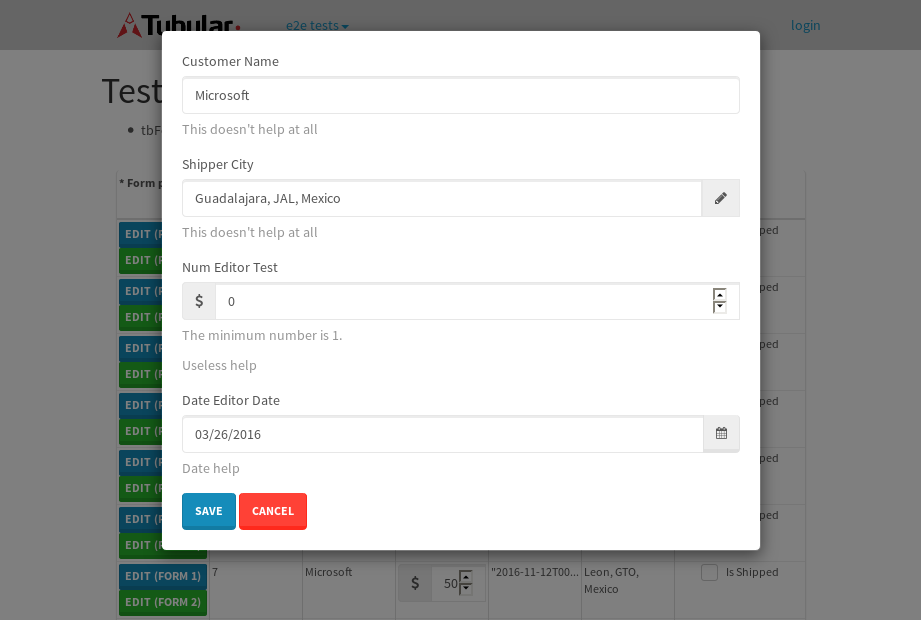
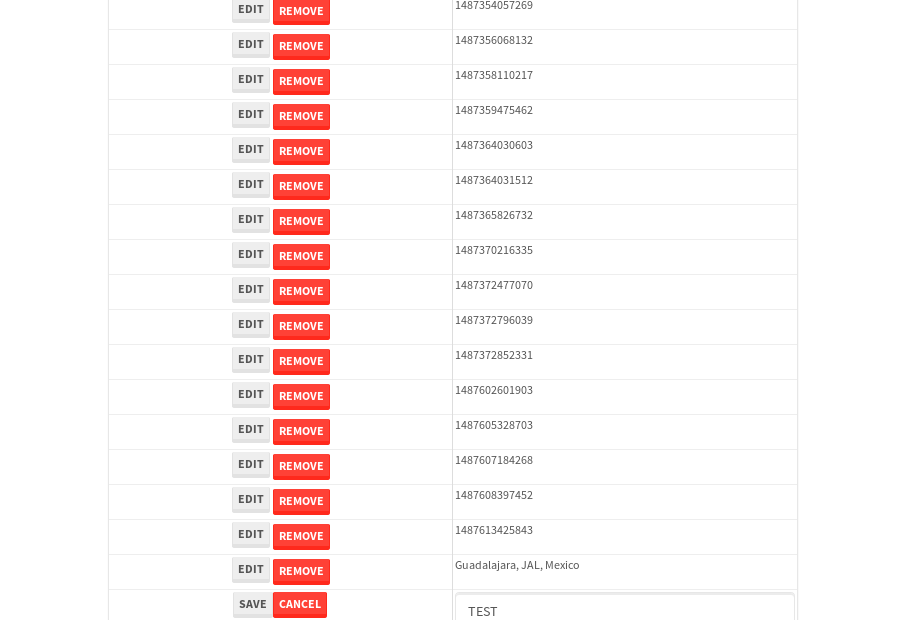
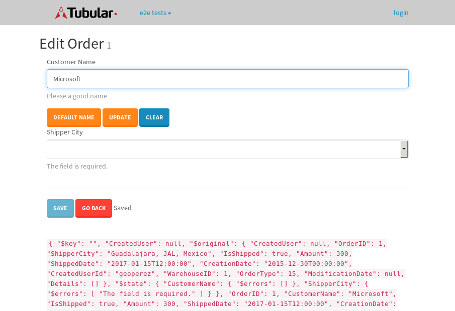

tbColumn.Grid Sorting - 29.09sTests: 5Skipped: 0Failures: 0 should sort data in ascending order then on descending order when sorting by Order Id column - 5.83sTests passed: 100.00%should order data in ascending order when click-sorting an unsorted text column - 6.029sTests passed: 100.00%should order data in descending order when click-sorting an ascending-sorted text column - 6.163sTests passed: 100.00%should order data in ascending order when click-sorting an unsorted date column - 5.249sTests passed: 100.00%should order data in descending order when click-sorting twice an unsorted date column - 5.815sTests passed: 100.00%
tbColumn.Grid Components - 5.353sTests: 3Skipped: 0Failures: 0 should print grid - 1.746s***Skipped***Tests passed: 0%should export grid - 1.805s***Skipped***Tests passed: 0%should show column selector - 1.802sTests passed: 100.00%
tbSingleForm.Form validations - 2.544sTests: 2Skipped: 0Failures: 0 should have an empty required field - 1.328sTests passed: 100.00%should not be able to click on save - 1.216sTests passed: 100.00%
Tubular Filters.tbColumnFilter - 111.677sTests: 12Skipped: 0Failures: 0 should cancel filtering when clicking outside filter-popover - 10.008sTests passed: 100.00%should disable Value text-input for "None" filter - 6.793sTests passed: 100.00%should disable apply button for "None" filter - 7.028sTests passed: 100.00%should decorate popover button when showing data is being filtered for its column - 11.891sTests passed: 100.00%should correctly filter data for the "Equals" filtering option - 8.613sTests passed: 100.00%should correctly filter data for the "Not Equals" filtering option - 8.968sTests passed: 100.00%should correctly filter data for the "Contains" filtering option - 9.319sTests passed: 100.00%should correctly filter data for the "Not Contains" filtering option - 9.256sTests passed: 100.00%should correctly filter data for the "Starts With" filtering option - 7.45sTests passed: 100.00%should correctly filter data for the "Not Starts With" filtering option - 6.89sTests passed: 100.00%should correctly filter data for the "Ends With" filtering option - 6.787sTests passed: 100.00%should correctly filter data for the "Not Ends With" filtering option - 7.426sTests passed: 100.00%
Tubular Filters.tbColumnDateTimeFilter - 136.997sTests: 12Skipped: 0Failures: 0 should cancel filtering when clicking outside filter-popover - 8.039sTests passed: 100.00%should disable Value text-input for "None" filter - 7.044sTests passed: 100.00%should disable apply button for "None" filter - 7.011sTests passed: 100.00%should clear filtering when clicking on Clean button - 17.817sTests passed: 100.00%should decorate popover button when showing data is being filtered for its column - 11.954sTests passed: 100.00%should correctly filter data for the "Equals" filtering option - 6.657sTests passed: 100.00%should correctly filter data for the "Not Equals" filtering option - 7.36sTests passed: 100.00%should correctly filter data for the "Between" filtering option - 12.228sTests passed: 100.00%should correctly filter data for the "Greater-or-equal" filtering option - 12.468sTests passed: 100.00%should corretlly filter data for the "Greater" filtering option - 11.829sTests passed: 100.00%should correctly filter data for the "Less-or-equal" filtering option - 11.763sTests passed: 100.00%should correctly filter data for the "Less" filtering option - 12.023sTests passed: 100.00%
Tubular Filters.tbColumnOptionsFilter - 82.8sTests: 3Skipped: 0Failures: 0 should cancel filtering when clicking outside filter-popover - 9.383sTests passed: 100.00%should decorate popover button when showing data is being filtered for its column - 11.732sTests passed: 100.00%should filter column-elements in accordance to the selected filter when selecting a single option - 50.247sTests passed: 100.00%
Tubular Filters.tbTextSearch - 50.146sTests: 5Skipped: 0Failures: 0 min-chars is not set - 1.275sTests passed: 100.00%should filter data in searchable-column customer name to matching inputted text, starting from 3 characters - 7.235sTests passed: 100.00%should filter data in searchable-column shipper city to matching inputted text, starting from 3 characters - 12.152sTests passed: 100.00%should show clear button when there is inputted text only - 6.958sTests passed: 100.00%should clear filtering when clicking clear button - 16.996sTests passed: 100.00%
tbForm related components.tbCheckboxField - 8.427sTests: 2Skipped: 0Failures: 0 should save changes on "SAVE" - 4.24sTests passed: 100.00%should discard changes on "CANCEL" - 2.537sTests passed: 100.00%
tbForm related components.tbDropDownEditor - 12.606sTests: 5Skipped: 0Failures: 0 should set initial input value to the value of "value" attribute when defined - 2.055sTests passed: 100.00%should show the component name value in a label field when "showLabel" attribute is true - 1.928sTests passed: 100.00%should show a help field equal to this attribute, is present - 2.317sTests passed: 100.00%should submit modifications to item/server when clicking form "Save" - 3.038sTests passed: 100.00%should NOT submit modifications to item/server when clicking form "Cancel" - 2.667sTests passed: 100.00%
tbForm related components.tbTextArea - 20.161sTests: 7Skipped: 0Failures: 0 should set initial input value to the value of "value" attribute when defined - 2.754sTests passed: 100.00%should be invalidated when the number of chars is not in the range of "min" and "max" attributes - 2.787sTests passed: 100.00%should show the component name value in a label field when "showLabel" attribute is true - 1.8sTests passed: 100.00%should show a help field equal to this attribute, is present - 1.78sTests passed: 100.00%should require the field when the attribute "required" is true - 3.104sTests passed: 100.00%should submit modifications to item/server when clicking form "Save" - 4.31sTests passed: 100.00%should NOT submit modifications to item/server when clicking form "Cancel" - 2.678sTests passed: 100.00%
tbForm related components.tbDateEditor - 19.111sTests: 6Skipped: 0Failures: 3 should set initial date value to the value of "value" attribute when defined - 2.642sExpected false to be true.✗Tests passed: 0.00%should be invalidated when the date is not in the range of "min" and "max" attributes - 2.953sTests passed: 100.00%should show the component name value in a label field when "showLabel" attribute is true - 2.319sTests passed: 100.00%should show a help field equal to this attribute, is present - 2.865sTests passed: 100.00%should submit modifications to item/server when clicking form "Save" - 4.219sExpected false to be true.✗Tests passed: 0.00%should NOT submit modifications to item/server when clicking form "Cancel" - 2.674sExpected false to be true.✗Tests passed: 0.00%
tbForm related components.tbTypeaheadEditor - 21.337sTests: 7Skipped: 0Failures: 0 should show an options list when there is an API-info/component entered-data - 3.123sTests passed: 100.00%should select the option clicked - 2.426sTests passed: 100.00%should show a "delete" button when an option/match is selected, and delete the option if button is clicked - 2.515sTests passed: 100.00%should show a label value equal to the component name when "showLabel" attribue is true - 1.848sTests passed: 100.00%should require a value when "require" attribute is true - 4.112sTests passed: 100.00%should submit modifications to item/server when clicking form "Save" - 4.015sTests passed: 100.00%should NOT submit modifications to item/server when clicking form "Cancel" - 2.391sTests passed: 100.00%
tbForm related components.tbSimpleEditor - 23.708sTests: 9Skipped: 0Failures: 0 should set initial input value to the value of "value" attribute when defined - 1.983sTests passed: 100.00%should be invalidated when the number of chars is not in the range of "min" and "max" attributes - 2.721sTests passed: 100.00%should show the component name value in a label field when "showLabel" attribute is true - 1.851sTests passed: 100.00%should set input placeholder to the value of "placeholder" attribute - 2.15sTests passed: 100.00%should validate the control using the "regex" attribute, if present - 2.948sTests passed: 100.00%should show a help field equal to this attribute, is present - 2.032sTests passed: 100.00%should require the field when the attribute "required" is true - 2.407sTests passed: 100.00%should submit modifications to item/server when clicking form "Save" - 4.247sTests passed: 100.00%should NOT submit modifications to item/server when clicking form "Cancel" - 2.503sTests passed: 100.00%
tbForm related components.tbNumericEditor - 18.807sTests: 7Skipped: 0Failures: 0 should set initial component value to the value of "value" attribute when defined - 2.091sTests passed: 100.00%should be invalidated when the entered number is not in the range of "min" and "max" attributes - 2.698sTests passed: 100.00%should show the component name value in a label field when "showLabel" attribute is true - 2.072sTests passed: 100.00%should show a help field equal to this attribute, is present - 2.005sTests passed: 100.00%should require the field when the attribute "required" is true - 2.911sTests passed: 100.00%should submit modifications to item/server when clicking form "Save" - 3.654sTests passed: 100.00%should NOT submit modifications to item/server when clicking form "Cancel" - 2.585sTests passed: 100.00%
tbForm Connection Error NoModelKey - 2.952sTests: 1Skipped: 0Failures: 0 tbForm connection error functionality - 0.57sTests passed: 100.00%
tbForm Connection Error NoServerUrl - 3.449sTests: 1Skipped: 0Failures: 0 tbForm connection error functionality - 0.666sTests passed: 100.00%
tbGridComponents - 33.514sTests: 6Skipped: 0Failures: 4 should add item with newRow method - 4.697sExpected 'EDIT REMOVE TEST' not to be 'EDIT REMOVE TEST'.✗Tests passed: 50.00%should add item with newRow method and cancel action - 0.928sTests passed: 100.00%should update item with tbSaveButton - 2.088sExpected '' to be 'TEST'.✗Tests passed: 0.00%should NOT update item on cancel Update action - 1.434sFailed: ElementNotVisibleError✗Tests passed: 0.00%should remove item with tbRemoveButton - 21.898sExpected 61 not to be 61, 'should remove the row from the table'.✗Tests passed: 50.00%should NOT remove item on cancel Remove action - 0.997sTests passed: 100.00%
tbGridPager.navigation buttons - 11.285sTests: 1Skipped: 0Failures: 0 should perform no action when clicking on the numbered navigation button corresponding to the current-showing results page - 1.468sTests passed: 100.00%
tbGridPager.navigation buttons.first/non-last results page related functionallity - 5.237sTests: 2Skipped: 0Failures: 0 should disable "first" and "previous" navigation buttons when in first results page - 2.692sTests passed: 100.00%should enable "last" and "next" navigation buttons when in a results page other than last - 2.545sTests passed: 100.00%
tbGridPager.navigation buttons.last/non-first results page related functionallity - 4.58sTests: 2Skipped: 0Failures: 0 should disable "last" and "next" navigation buttons when in last results page - 2.201sTests passed: 100.00%should enable "first" and "previous" navigation buttons when in a results page other than first - 2.377sTests passed: 100.00%
tbGridPager.page navigation - 8.722sTests: 5Skipped: 0Failures: 0 should go to next results page when clicking on next navigation button - 1.977sTests passed: 100.00%should go to previous results page when clicking on previous navigation button - 2.189sTests passed: 100.00%should go to last results page when clicking on last navigation button - 1.762sTests passed: 100.00%should go to first results page when clicking on first navigation button - 1.348sTests passed: 100.00%should go to corresponding results page when clicking on a numbered navigation button - 1.446sTests passed: 100.00%
tbGridPagerInfo - 6.372sTests: 2Skipped: 0Failures: 0 should show text in accordance to numbered of filter rows and current results-page - 2.101sTests passed: 100.00%should show count in footer - 0.566sTests passed: 100.00%
tbHttp - 18.337sTests: 8Skipped: 1Failures: 0 should be authenticated - 2.557sTests passed: 100.00%retrieve data - 2.748sTests passed: 100.00%should not login bad credentials - 2.614sTests passed: 100.00%should have a refresh token - 2.515sTests passed: 100.00%should remove authentication - 2.422sTests passed: 100.00%get method-Is not authenticated - 2.674sTests passed: 100.00%post method-Is not authenticated - 2.804sTests passed: 100.00%should regenerate access token on post - 0s***Skipped***Tests passed: 0%
tbPageSizeSelctor - 11.06sTests: 4Skipped: 0Failures: 0 should filter up to 10 data rows per page when selecting a page size of "10" - 2.57sTests passed: 100.00%should filter up to 20 data rows per page when selecting a page size of "20" - 1.783sTests passed: 100.00%should filter up to 50 data rows per page when selecting a page size of "50" - 2.757sTests passed: 100.00%should filter up to 100 data rows per page when selecting a page size of "100" - 2.155sTests passed: 100.00%
tbRowSelectable - 10.292sTests: 2Skipped: 0Failures: 0 selected rows - 5.534sTests passed: 100.00%unselected rows - 3.188sTests passed: 100.00%
tbSingleForm - 23.419sTests: 8Skipped: 0Failures: 1 should load correct info - 2.741sTests passed: 100.00%should change customer name - 4.212sTests passed: 100.00%should save it - 2.936sFailed: Element is not enabled✗Tests passed: 0.00%should clear the inputs - 2.753sTests passed: 100.00%should update - 2.834sTests passed: 100.00%should reset editor - 2.803sTests passed: 100.00%should not save if not Changes - 2.519sTests passed: 100.00%should not be able to click on save - 2.62sTests passed: 100.00%


{kind=link}
{kind=link}
{kind=link}